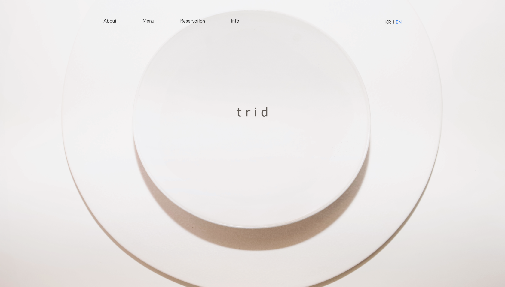
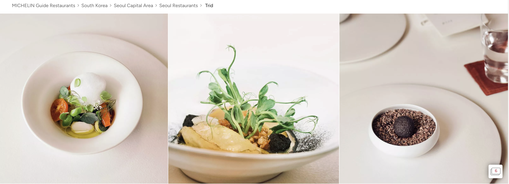
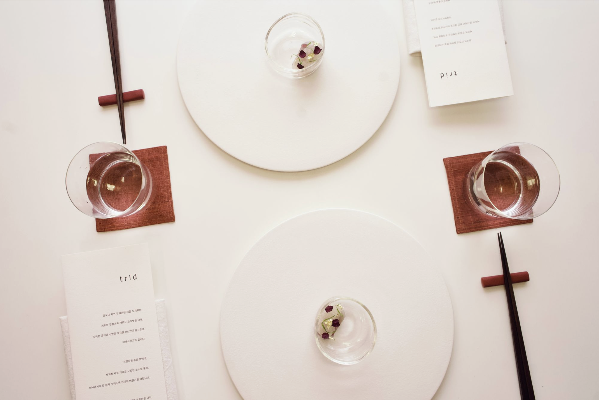
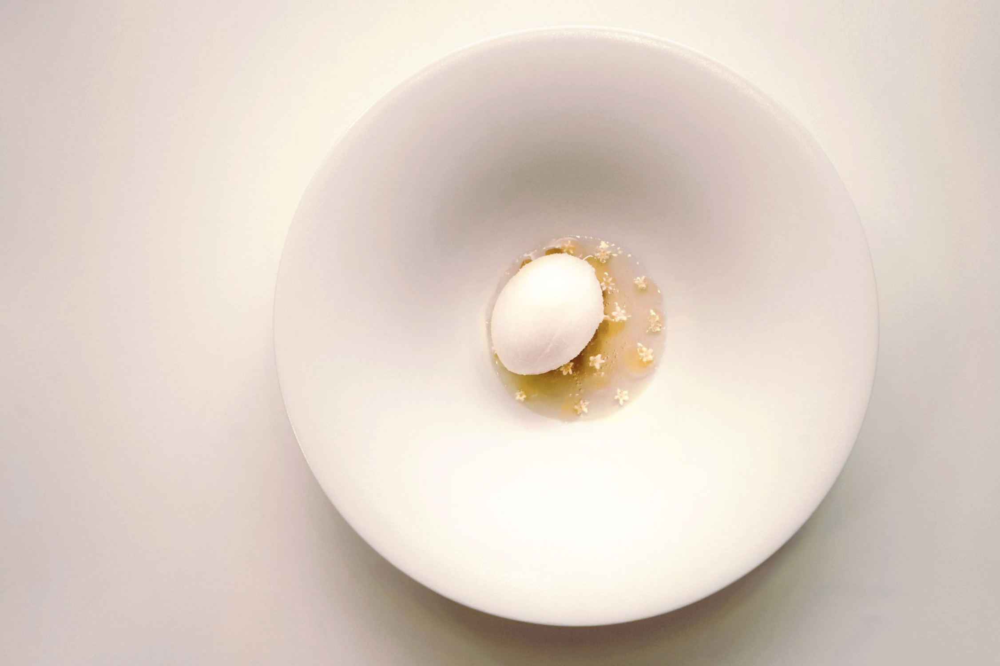

trid seoul
Go to the official website ↗Project Overview
TRID underwent a strategic rebranding following the chef’s Michelin appearance on Netflix’s Culinary Class Wars, while also being selected for the Michelin Guide. The restaurant’s digital presence was redesigned as part of a broader repositioning process, with a focus on restrained pacing, typography, and visual clarity.
Rather than functioning only as an informational site, the website was designed to feel like an extension of the dining experience itself. The goal was to create a presentation system that felt calm, precise, and atmospheric while supporting a stronger and more coherent identity online.
My Contributions
- Led the overall visual direction and brand positioning strategy
- Developed the conceptual framework and visual narrative for the website
- Art directed and produced food and spatial photography
- Designed and built the official website in Webflow
- Established a cohesive visual system across digital and physical touchpoints

Michelin Guide
My role covered both visual direction and digital execution. I restructured the information flow, refined the hierarchy of content, and translated TRID’s atmosphere into a web experience that felt more intentional and immersive. Each page was approached as part of a visual identity system rather than as a neutral container for information.
The design language emphasized white space, proportion, and image rhythm. Photography was treated not as decoration but as a central structural element, helping define pace and mood across the site. This allowed the project to communicate luxury and restraint without relying on excess.
Alongside the website, I also produced imagery used across TRID’s broader digital communication. The result was a more unified presence that aligned the restaurant’s food, space, and online identity into a single visual direction.


